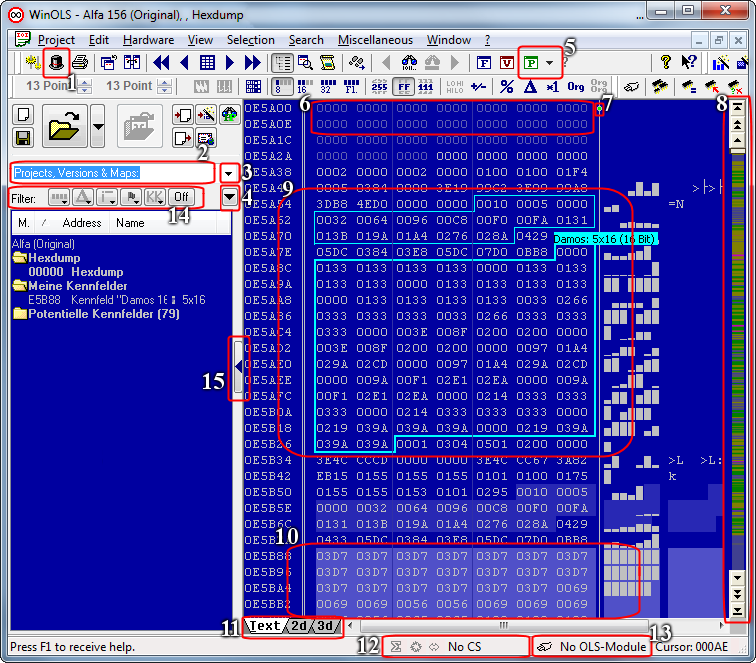

The WinOLS main screen contains several elements:

| 2. | Search field for projects, versions and maps. Enter a text to reduce the view to matching entries |
| 3. | Dropdown button for previous searches |
| 4. | Options for the map list and the search |
| 7. | Switching of the preference of hexdump or bar when the window is too small |
| 8. | Color-coded overview of the project. The scrollbar has 3 buttons at top and bottom: Scroll to top/bottom; Scroll fast; Scroll normally |
| 9. | Automatically found, potential map |
| 10. | Map registered by you (Also visible at "My maps") |
| 11. | Switching of the view mode between Text, 2d and 3d |
| 13. | Hardware status (of OLS16 or OLS300 modules) |
| 14. | Several filters for the list "Projects, Versions and Maps" |